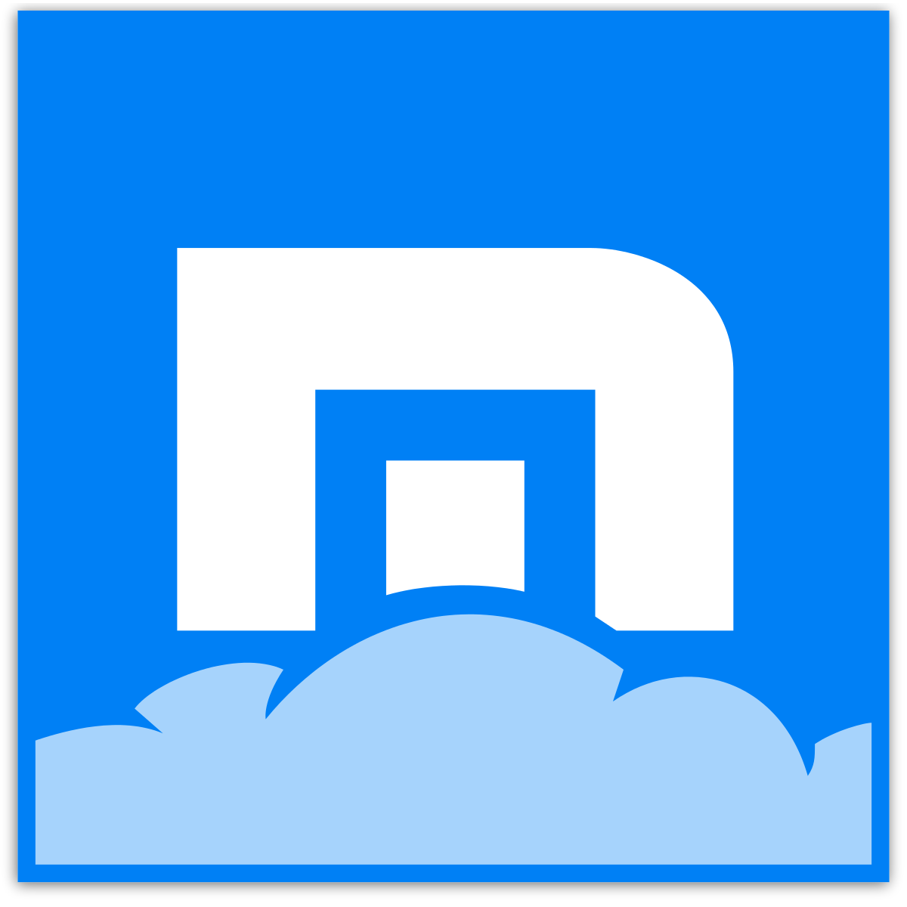

Google Chrome


Cuadro Comparativo |
||
| Navegadores menos ultilizados | ||
|---|---|---|
| Maxthon | Varias empresas de seguridad han confirmado que el software de la empresa Maxthon recopila información de los usuarios aunque estos ya hayan configurado el navegador web para que esto no se produzca. El problema en este caso no solo reside en que a pesar de desactivarse continue recopilando información, sino que esta resulta ser más de lo habitual en este tipo de aplicaciones. |
|
UC Browser |
Este navegador es sumamente conocido en Android: posee la friolera de más de 500 millones de descargas con una media de 4,5 estrellas en casi 20 millones de valoraciones. Con los números que presenta la aplicación cualquiera pensaría que no se la juega a la hora de cumplir con sus obligaciones, pero, según descubrieron los investigadores de Dr Web, UC Browser puede descargar código de servidores externos a la Google Play, algo prohibido. Además, ha sido cazado descargando código y actualizando el navegador sin que el usuario lo perciba. |
|
| Falkon | Lo bueno es Las fuentes de algunos (pocos) sitios que visito suelen verse bastante mal en Firefox, pero Falkon las muestra perfectamente. Y el problema no es tanto del navegador, sino del motor que utiliza: QtWebEngine no ofrece muchas opciones. Existen pocos diccionarios disponibles y no es posible cambiar de uno al otro: el sistema usa todos los diccionarios activados simultáneamente, lo cual puede resultar problemático cuando una palabra mal escrita en castellano resulta ser correcta en italiano o viceversa. |
|
| Cliqz | Cliqz es un navegador web basado en Firefox y actualmente se encuentra en fase de desarrollo beta. El código de los proyectos está disponible en GitHub. Pero lo interesante de Cliqz no termina solo en como integra las herramientas de Ghostery para ofrecer una navegación más privada, sino en otras características extra de las que vamos a comentar más adelante. |
|
| Navegadores más ultilizados | ||
Chrome |
Algunas ventajas de este navegador son: Rápido y fiable, Sincronización de datos, Buenas opciones para la expansión de la función y algunas desventajas son: No hay buena protección de datos, Alta carga en la memoria principal cuando hay muchas pestañas abiertas |
|
Mozilla |
Algunas ventajas de este navegador son: Muchas extensiones, Alta protección de datos, Buena gestión de las contraseñas y algunas desventajas son: Mayor riesgo de caída, Ocasionalmente un alto uso de recursos. |
|
| Microsoft Edge |
Algunas ventajas de este navegador son: Protección contra el malware y el phishing, Página de inicio personalizada, Se pueden añadir notas a los sitios web y algunas desventajas son: Protección de datos deficiente, Pocas extensiones y addons. |
|
| Safari | Algunas ventajas de este navegador son: Buen rendimiento y fiable para los dispositivos Apple, Muy buena protección de datos y algunas desventajas son: Falta seguridad ya que las actualizaciones se llevan a cabo muy poco a poco, No es compatible con Windows o Android, Menos extensiones que otros navegadores |
|
Opera |
Algunas ventajas de este navegador son: Ampliable con addons, Muy seguro, Buena sincronización de los dispositivos de escritorio y móviles y algunas desventajas son: No está preinstalado, debe descargarse e instalarse |
|